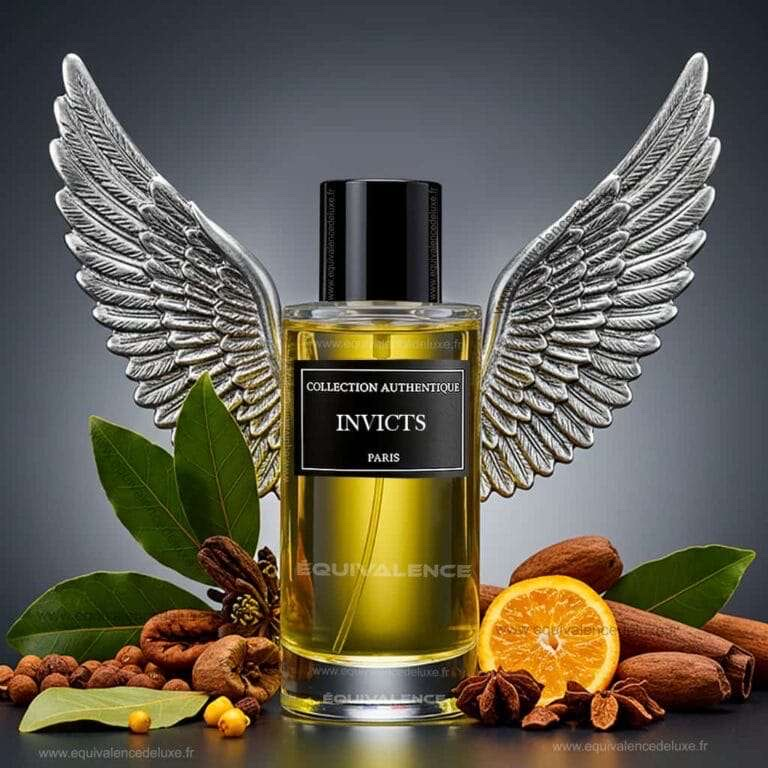

Description
Invicts est une fragrance moderne et vibrante, évoquant la puissance, la jeunesse et la liberté. Un parfum dynamique et exaltant.
Inspiration
Inspiré par les esprits conquérants et les héros contemporains, Invicts capture l'énergie pure d’un gagnant. Il incarne force et clarté.
Notes Olfactives
- Tête : Pamplemousse, Mandarine
- Cœur : Laurier, Jasmin
- Fond : Ambre gris, Bois de gaïac, Patchouli